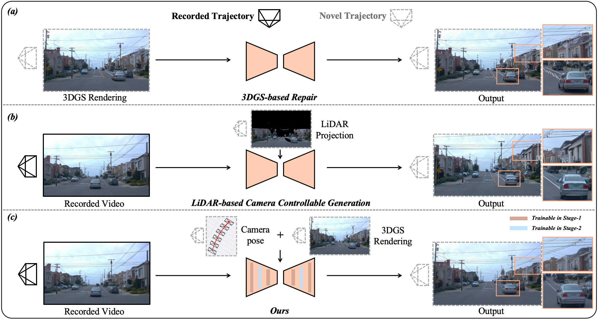
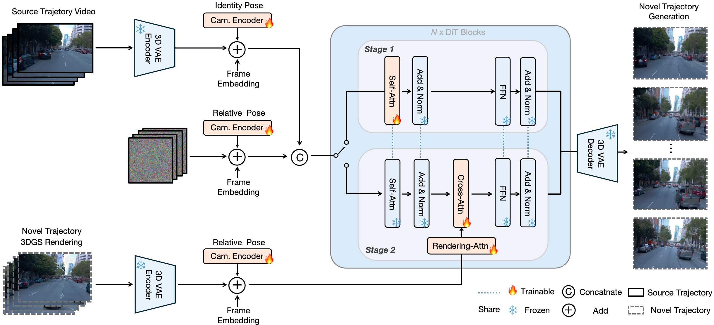
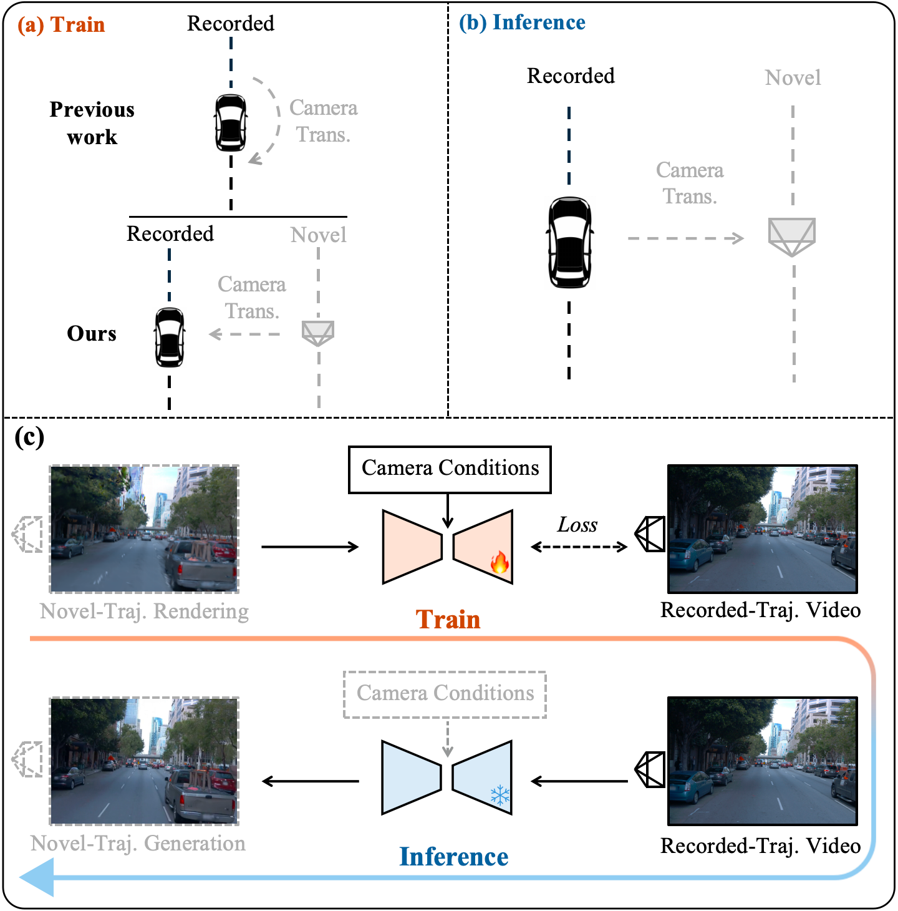

[1] Bai, Jianhong, et al. "Recammaster: Camera-controlled generative rendering from a single video." arXiv preprint arXiv:2503.11647 (2025).
[2] Wan, Team, et al. "Wan: Open and advanced large-scale video generative models." arXiv preprint arXiv:2503.20314 (2025).
[3] Wu, Jay Zhangjie, et al. "Difix3d+: Improving 3d reconstructions with single-step diffusion models." Proceedings of the Computer Vision and Pattern Recognition Conference. 2025.
[4] Chen, Ziyu, et al. "Omnire: Omni urban scene reconstruction." arXiv preprint arXiv:2408.16760 (2024).
[5] Wang, Qitai, et al. "Freevs: Generative view synthesis on free driving trajectory." arXiv preprint arXiv:2410.18079 (2024).
[6] Yan, Yunzhi, et al. "Streetcrafter: Street view synthesis with controllable video diffusion models." Proceedings of the Computer Vision and Pattern Recognition Conference. 2025.
ReCamDriving: LiDAR-Free Camera-Controlled
Novel Trajectory Video Generation
Abstract
We propose ReCamDriving, a purely vision-based, camera-controlled novel-trajectory video generation framework. While repair-based methods fail to restore complex artifacts and LiDAR-based approaches rely on sparse and incomplete cues, ReCamDriving leverages dense and scene-complete 3DGS renderings for explicit geometric guidance, achieving precise camera-controllable generation. To mitigate overfitting to restoration behaviors when conditioned on 3DGS renderings, ReCamDriving adopts a two-stage training paradigm: the first stage uses camera poses for coarse control, while the second stage incorporates 3DGS renderings for fine-grained viewpoint and geometric guidance. Furthermore, we present a 3DGS-based cross-trajectory data curation strategy to eliminate the train–test gap in camera transformation patterns, enabling scalable multi-trajectory supervision from monocular videos. Based on this strategy, we construct the ParaDrive dataset, containing over 110K parallel-trajectory video pairs. Extensive experiments demonstrate that ReCamDriving achieves state-of-the-art camera controllability and structural consistency.

Comparison of novel-trajectory generation. Repair-based methods (e.g., Difix3D+) suffer from severe artifacts under novel viewpoints, while LiDAR-based camera-controlled methods (e.g., StreetCrafter) show geometric inconsistencies in occluded or distant regions due to incomplete cues. In contrast, ReCamDriving employs a coarse-to-fine two-stage training strategy that leverages dense scene-structure information from novel-trajectory 3DGS renderings for precise camera control and structurally consistent generation.
Methodology

Overview of our framework. We adopt a two-stage training scheme for precise and structurally consistent novel-trajectory video generation. In Stage 1, ReCamDriving trains DiT blocks conditioned on the source trajectory video and relative camera (cam.) pose. When switching to Stage 2, the original DiT parameters are frozen, and additional attention modules are introduced to integrate 3DGS renderings for fine-grained view control and structural guidance. Shared modules between stages are connected with blue dashed lines.

Cross-trajectory Data Curation Strategy. We introduce a novel 3DGS-based cross-trajectory data curation strategy to eliminate the train–inference gap in camera transformation patterns, enabling scalable lateral trajectory supervision from single-trajectory videos. With this strategy, we construct the ParaDrive dataset, containing over 110K parallel-trajectory video pairs.
Demos
Our method leverages novel-trajectory 3DGS renderings as structural camera conditions, enabling the generation of high-quality novel-trajectory videos under large lateral offsets.
Source Trajectory Video
Condition (3DGS Rendering @ Right 3m)
Generated Novel-Trajectory Video
Source Trajectory Video
Condition (3DGS Rendering @ Right 3m)
Generated Novel-Trajectory Video
Source Trajectory Video
Condition (3DGS Rendering @ Right 4m)
Generated Novel-Trajectory Video
Left @ 2m
Source Trajectory Video
Right @ 2m
Left @ 3m
Source Trajectory Video
Right @ 3m
Left @ 4m
Source Trajectory Video
Right @ 4m
Comparisons
We compare ReCamDriving with state-of-the-art novel-trajectory generation methods. Repair-based methods (e.g., Difix3D+) often produce view-inconsistent corrections on fine structures such as lane markings and road text, while LiDAR-based camera-controlled methods (e.g., FreeVS and StreetCrafter) suffer from severe inconsistencies under large viewpoint shifts due to sparse LiDAR conditioning, especially on occluded vehicles and distant backgrounds. In contrast, ReCamDriving achieves geometrically consistent and high-quality generation across wide camera shifts. The FreeVS results shown below appear at a lower resolution because the officially released model is trained and tested on a sky-cropped resolution.
Scene 1 @ Left 3m
Source Trajectory Video
DriveStudio
Difix3D+
FreeVS
StreetCrafter
Ours
Scene 2 @ Left 3m
Source Trajectory Video
DriveStudio
Difix3D+
FreeVS
StreetCrafter
Ours
Scene 3 @ Right 3m
Source Trajectory Video
DriveStudio
Difix3D+
FreeVS
StreetCrafter
Ours
Scene 4 @ Right 3m
Source View
DriveStudio
Difix3D+
FreeVS
StreetCrafter
Ours
Acknowledgements and References
We sincerely thank the following outstanding works for their pioneering exploration and inspiration in this field, as well as the assistance provided by their open-source code.
Citation
If you find this project helpful, please cite us:@article{li2025recamdriving,
title={ReCamDriving: LiDAR-Free Camera-Controlled Novel Trajectory Video Generation},
author={xxx},
journal={arXiv preprint arXiv:2510.22213},
year={2025}
}